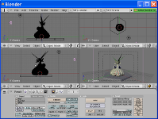
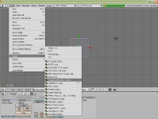
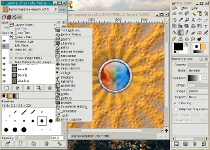
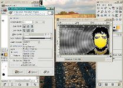
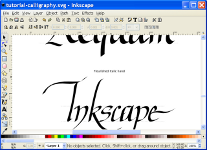
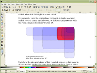
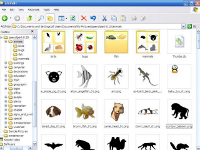
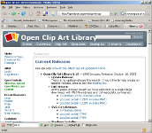

หมวดซอฟต์แวร์ :
สนับสนุนโดย :
กราฟิก
Blender
โปรแกรม Blender เป็นโปรแกรม สร้างวัตถุสามมิติ เหมาะสำหรับทำ animations เป็นโปรแกรมสร้างโมเดลสามมิติ เพียงโปรแกรมเดียว ที่สามารถ ทำ model, texture, animate, render, และ export ด้วยขนาดโปรแกรมที่น้อยกว่า 10 MB มีกลุ่มผู้พัฒนา คอยเพิ่มเติม feature และ extensions ใหม่ๆ อยู่เสมอ เช่น Yafray rendering engine สำหรับสร้าง effect ให้ดูเหมือนภาพถ่าย Blender สามารถ export ไฟล์ได้หลายสกุล เช่น VRML, Cal3d, AC3D และ plugin ที่สนับสนุนภาษา Python คุณสามารถเขียน extensions ของตัวเอง หรือจะเลือกใช้ extensions ที่มีอยู่อีกมากมายก็ได้ งานสามมิติยังคงเป็นงานคำนวณที่ซับซ้อน แต่ เพราะ Blender ทำให้สามารถเรียนรู้ได้ไม่ยาก 
{kind=link}
{kind=link}
GIMP
The GIMP (หรือ GNU Image Manipulation Program) เหมาะสำหรับผู้ที่ต้องการปรับแต่งภาพถ่ายดิจิตอล, ออกแบบภาพ, ตกแต่งเว็บ, แปลงไฟล์รูปภาพ, หรือแม้แต่สร้างสรรค์ภาพความละเอียดสูง สำหรับงานพิมพ์ต่างๆ โปรแกรม GIMP มีเครื่องมือต่างๆมากมาย เช่น paint tool, gradient editor, blend tool, layer และ layer mask มี blending mode มากกว่า 20 mode รองรับการ import, export ไฟล์หลากหลายสกุล และอื่นๆอีกมากมาย 
{kind=link}
{kind=link}
Inkscape
Inkscape เป็นโปรแกรม vector graphics ที่ใช้งานได้ง่าย รองรับไฟล์สกุล SVG (Scalable Vector Graphics) ซึ่งประกอบด้วย shapes, paths, text, markers, clones, alpha blending, transforms, gradients, patterns และ grouping นอกจากนั้น Inkscape ยังสนับสนุน Creative Commons meta-data, node editing, layers, complex path operations, bitmap tracing, text-on-path, flowed text, direct XML editing เป็นต้น หากคุณกำลังมองหาเครื่องมือจัดการภาพแบบเวกเตอร์ Inkscape เป็นคำตอบของคุณ 
{kind=link}
{kind=link}
Open Clip Art
ชุดรูปภาพ clip art หลากหลายชนิด ทั้งที่เป็นเวกเตอร์และบิตแมป Open Clip Art รวบรวมรูป clip art จำนวนมากเอาไว้เป็นหมวดหมู่ โดยเปิดโอกาสให้คนทั่วไปส่ง clip art ของตนเข้าร่วมโครงการ คุณสามารถใช้ clip art เหล่านี้เพื่อประกอบในเอกสาร, presentation หรือเว็บ เพื่อความสวยงาม แต่ละรูปมีทั้งไฟล์ PNG ที่ช่วยให้สะดวกในการค้นหารูปที่ต้องการ จากนั้นคุณสามารถใช้ Inkscape เปิดไฟล์ SVG ของรูปเดียวกันเพื่อ export เป็นขนาดและฟอร์แมตที่ต้องการ 
{kind=link}
{kind=link}